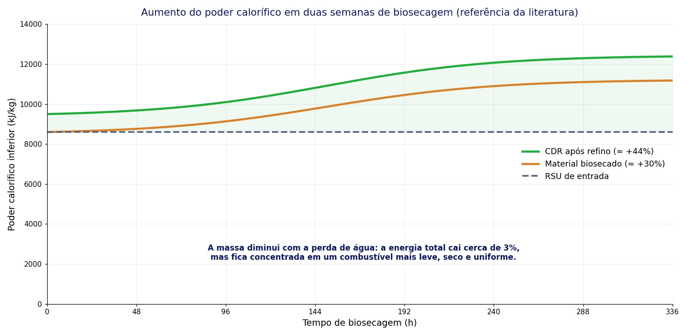
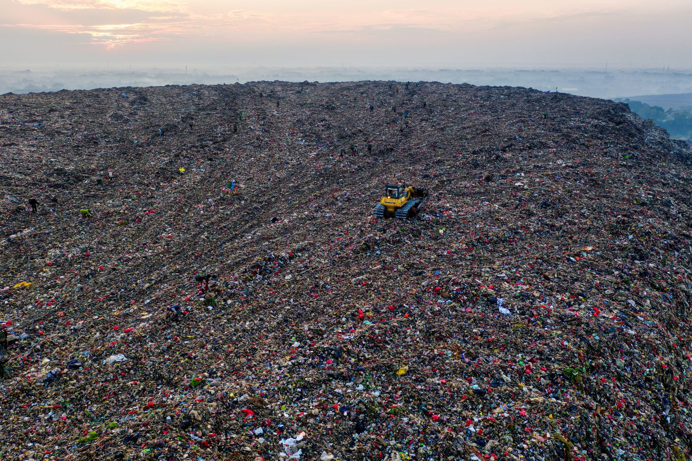
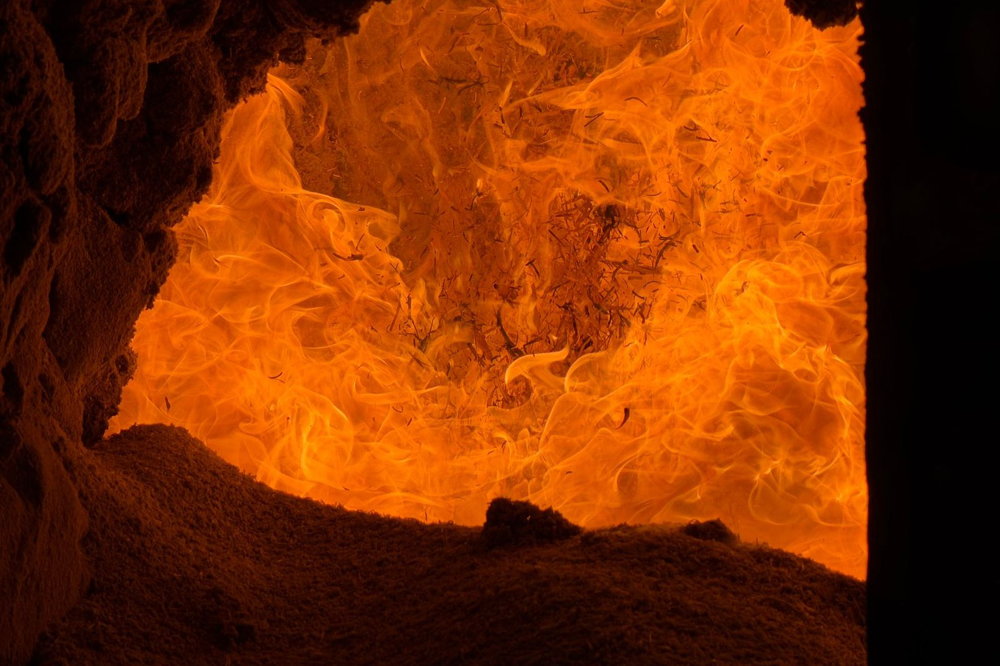
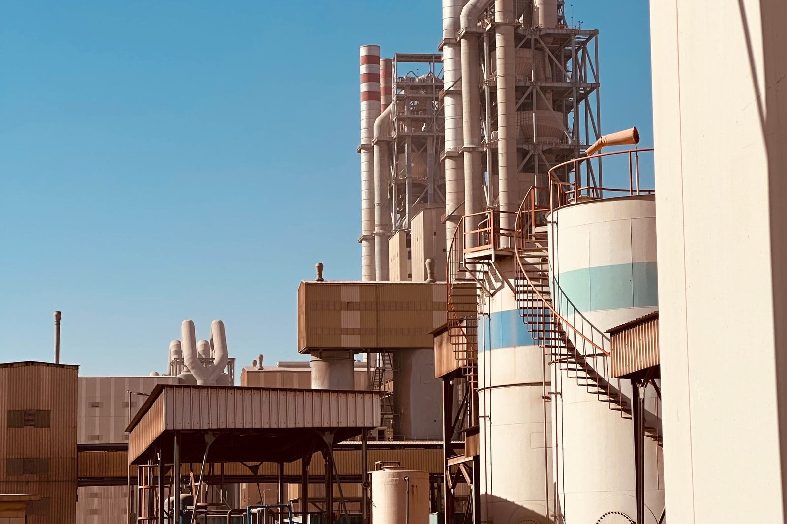

Problema / desafio do cliente
Muitas indústrias dependem de combustíveis convencionais caros para gerar calor, enquanto os municípios próximos enviam toneladas de resíduos sólidos urbanos (RSU) para aterros. O combustível derivado de resíduos (CDR) pode unir os dois lados: transformar a fração não reciclável dos RSU em um combustível para a própria indústria.
O desafio é que os RSU são úmidos e heterogêneos, com poder calorífico baixo e variável. A pergunta do estudo é: é técnica e economicamente viável produzir CDR por biosecagem, em pequena escala, para atender a demanda térmica de uma unidade industrial?
Contexto e características do processo
- Biosecagem é um processo aeróbio em que o calor liberado pela própria atividade microbiana, junto com a ventilação forçada, evapora a água dos resíduos.
- Diferente da bioestabilização (que busca um material estabilizado para aterro), a biosecagem busca um material mais seco e com maior poder calorífico, que depois é refinado para remover metais, vidro, inertes e finos.
- A tecnologia permite plantas descentralizadas, dimensionadas pela demanda térmica de uma indústria específica, com o CDR queimado em um sistema de combustão dedicado.

Diagnóstico e dados analisados
A viabilidade depende de um conjunto de fatores que precisam ser avaliados juntos:
- Demanda térmica da unidade industrial e custo do combustível que será substituído;
- quantidade e composição dos RSU disponíveis na região, hoje e no futuro;
- umidade e biodegradabilidade dos resíduos, que definem se há calor biológico suficiente para secá-los;
- qualidade do CDR após o refino (poder calorífico, cinzas, cloro, enxofre);
- população atendida necessária para garantir o fornecimento contínuo de RSU;
- CAPEX e OPEX da planta de biosecagem e do sistema de combustão.
Um ponto de atenção: regiões com coleta seletiva muito eficiente da fração orgânica podem ter pouca matéria biodegradável no resíduo remanescente, limitando o calor gerado e a eficiência da biosecagem.
Metodologia utilizada
O estudo foi estruturado em três fases, com uma decisão ao final de cada uma:
- Fase I – Caracterização dos RSU (8 semanas): levantamento de dados históricos e projeções de geração para 5 a 20 anos, campanhas de amostragem, composição gravimétrica, umidade, caracterização físico-química e biodegradabilidade.
- Fase II – Unidade-piloto de biosecagem: configuração e dimensionamento do piloto, variáveis de operação (ventilação, tempo de residência), monitoramento de temperatura, umidade e perda de massa, e qualidade do CDR obtido.
- Fase III – Viabilidade técnico-econômica: conceito e capacidade da planta, balanços de massa e energia, alternativas tecnológicas, CAPEX e OPEX, cenários de disponibilidade de RSU, riscos e recomendação para a escala industrial.

Solução de engenharia desenvolvida
A solução avaliada é uma planta de biosecagem de pequena escala integrada a um sistema de combustão dedicado, em que a produção de CDR é dimensionada para a demanda térmica da indústria. Os resíduos são classificados em frações funcionais para orientar o projeto:
- fração biodegradável: fonte do calor biológico que seca o material;
- fração combustível (papel, plásticos, têxteis, madeira): define o potencial energético do CDR;
- fração reciclável (metais, vidro): recuperada no refino;
- fração inerte e finos: removida para elevar a qualidade do CDR.
Tecnologias e processos envolvidos
- Biosecagem aeróbia com ventilação forçada.
- Separação e refino do material biosecado (metais, vidro, inertes e peneiramento de finos) para obter CDR de alta qualidade.
- Caracterização laboratorial: poder calorífico inferior e superior, sólidos totais e voláteis, cinzas, carbono, hidrogênio, oxigênio, nitrogênio, enxofre e cloro.
- Biodegradabilidade: relação C/N, atividade respiratória, consumo de O₂ e produção de CO₂.
- Balanços de massa e energia e modelagem técnico-econômica.
Modelagem, simulação e ferramentas computacionais
O núcleo técnico do estudo é o balanço energético da biosecagem: comparar o calor que a matéria orgânica pode liberar com a energia necessária para evaporar a água dos resíduos.

O ganho esperado é medido pela variação do poder calorífico inferior (ΔPCI = PCI do CDR − PCI do RSU). Na literatura internacional, duas semanas de biosecagem elevam o PCI do material em cerca de 30% e o do CDR refinado em cerca de 44%. Como parte da massa sai como água, a energia total cai cerca de 3%, mas fica concentrada em um combustível mais seco, leve e uniforme.

Resultados obtidos
- Roteiro técnico completo para decidir, com dados, se o CDR por biosecagem é viável para uma indústria específica.
- Definição dos parâmetros críticos a medir em campo e em laboratório (composição, umidade, PCI, biodegradabilidade, cloro e enxofre).
- Critério objetivo de autossustentação térmica da biosecagem (Ebio × Qevap).
- Estrutura de cenários de disponibilidade de RSU e de riscos, incluindo o efeito da coleta seletiva.
- Base para a estimativa de CAPEX e OPEX e para a recomendação sobre a implantação em escala industrial.
CAPEX/OPEX e análise técnico-econômica
Quando aplicável: estimativas de CAPEX e OPEX, comparação entre alternativas, custo por m³ ou por tonelada, payback.
Escopo e responsabilidades da GETA
A GETA é responsável por todo o estudo:
- levantamento de dados e planejamento das campanhas de amostragem;
- caracterização gravimétrica, físico-química e de biodegradabilidade dos RSU;
- projeto e acompanhamento da unidade-piloto de biosecagem;
- balanços de massa e energia, avaliação de alternativas tecnológicas e estimativa de CAPEX e OPEX;
- análise de cenários, riscos e recomendação para a escala industrial.
Principais entregáveis
- Relatório de caracterização dos RSU e do potencial de produção de CDR (Fase I).
- Relatório de operação e resultados da unidade-piloto (Fase II).
- Estudo de viabilidade técnico-econômica com balanços, CAPEX, OPEX, cenários e riscos (Fase III).
- Recomendação sobre a implantação em escala industrial.
Galeria


